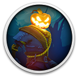

 Pumpkin Jack
Details
 |
|
| Playtime | Not Played |
| Last Activity | Never |
| Added | 26/10/2024 17:51:13 |
| Modified | 18/05/2025 2:16:31 |
| Completion Status | Not Played |
| Library | Gog |
| Source | GOG |
| Platform | PC (Windows) |
| Release Date | 23/10/2020 |
| Community Score | 68 |
| Critic Score | 77 |
| User Score | |
| Genre | Adventure Indie Platform |
| Developer | Nicolas Meyssonnier |
| Publisher | Beep Japan Headup Games Thunderful |
| Feature | Single Player |
| Links | Steam Official GOG Epic Discord Twitch |
| Tag | 2D Action Adventure Amazon Luna Cartoony Fantasy Platformer Puzzle Third Person |
Description

Pumpkin Jack is a Spooky Scary 3D platformer in which you embody Jack, the Mythical Pumpkin Lord! Dive into an Epic Adventure through otherworldly landscapes and help the Evil annihilate the Good!
- Colorful Cartoon Setting: Travel through lurid landscapes in levels featuring alluring atmospheres, each crafted with vibrant color palettes, and high-quality lighting effects
- Fight For Your Life: With challenging beasts lurking around every corner, players must master the art of combo attacks; dodging, and timing to survive dynamic real-time battles! Players must unlock weapons and choose wisely in order to strike down all who oppose them
- Don't Lose Your Head: Solve puzzles that focus on physics; gravity, and reflection as Jack, or ditch the skinsuit and just use your flaming head to burn books; hammer some moles, create paths for magic spheres; and more as each level introduces new and exciting challenges
- Find Friends to Fight at Your Side: Helpful companions are there to assist Jack on his journey, including a haughty hooty owl to guide him along; and a snarky crow, itching to assist with long-range attacks
Dive into an Epic Adventure and help the Evil annihilate the Good!


Follow the will of the Devil himself and slay your nemesis in an epic quest that will take you on a journey in the Boredom Kingdom, a mythical realm shattered by the Curse. You will meet friends along the way, from a haughty Owl to a snarky Crow!
Discover Stunning atmospheres in a Colorful yet Spooky Scary Kingdom

Travel through epic and dramatic settings, with each level having its own eerie atmosphere. Using a vibrant palette and high quality lighting effects, Pumpkin Jack invents its own unique cartoon universe inspired by the classic PS2 graphic style.
Jump, Run & Climb to carve your own way in Unique Levels

Pumpkin Jack is a classic 3D Platformer before anything else! Every level will challenge you through several themed platforms, all giving you new trials to complete.
Fight for your life against Evil Beasts by using awesome Unlockable Weapons

You will have to master the arts of dodging, timing and movement to vanquish Jack's foes. During the dynamic real time battles, choose which weapon you want to use and strike at the critical moment!
Face Breathtaking Challenges and discover tons of Original Gameplays

Solve puzzles that focus on physics, gravity and reflection. Inhabit a pumpkin head and burn books, hammer some moles, create a path for magic spheres… But also more! In each level, you will be faced with an action sequence using a new exclusive gameplay!